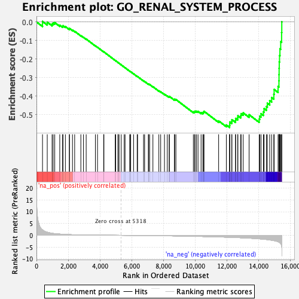
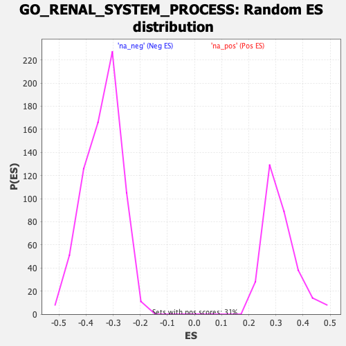

| | | Dataset | DE_genes |
| Phenotype | NoPhenotypeAvailable |
| Upregulated in class | na_neg |
| GeneSet | GO_RENAL_SYSTEM_PROCESS |
| Enrichment Score (ES) | -0.5682976 |
| Normalized Enrichment Score (NES) | -1.6790045 |
| Nominal p-value | 0.0 |
| FDR q-value | 0.102043584 |
| FWER p-Value | 0.805 |
Table: GSEA Results Summary

Fig 1: Enrichment plot: GO_RENAL_SYSTEM_PROCESS
Profile of the Running ES Score & Positions of GeneSet Members on the Rank Ordered List
| PROBE | GENE SYMBOL | GENE_TITLE | RANK IN GENE LIST | RANK METRIC SCORE | RUNNING ES | CORE ENRICHMENT | | 1 | HBB | | | 380 | 2.305 | 0.0025 | No |
| 2 | ADCY7 | | | 679 | 1.316 | -0.0013 | No |
| 3 | RHOA | | | 983 | 0.880 | -0.0106 | No |
| 4 | F2RL1 | | | 1052 | 0.800 | -0.0056 | No |
| 5 | CORIN | | | 1152 | 0.717 | -0.0036 | No |
| 6 | CYBA | | | 1467 | 0.534 | -0.0177 | No |
| 7 | HAS2 | | | 1647 | 0.453 | -0.0240 | No |
| 8 | PRKACB | | | 1671 | 0.445 | -0.0202 | No |
| 9 | AKR1B1 | | | 1822 | 0.383 | -0.0255 | No |
| 10 | MLLT6 | | | 2073 | 0.304 | -0.0381 | No |
| 11 | AKR1C3 | | | 2078 | 0.304 | -0.0348 | No |
| 12 | RRM2B | | | 2269 | 0.250 | -0.0442 | No |
| 13 | BCL2 | | | 2407 | 0.225 | -0.0504 | No |
| 14 | SULF1 | | | 2796 | 0.162 | -0.0738 | No |
| 15 | PRKACA | | | 2961 | 0.143 | -0.0827 | No |
| 16 | ADM | | | 3133 | 0.128 | -0.0924 | No |
| 17 | WNK4 | | | 3712 | 0.087 | -0.1289 | No |
| 18 | EDN1 | | | 3846 | 0.079 | -0.1366 | No |
| 19 | HNF1A | | | 4233 | 0.057 | -0.1611 | No |
| 20 | ADCY2 | | | 4251 | 0.055 | -0.1615 | No |
| 21 | GNAI2 | | | 4963 | 0.018 | -0.2075 | No |
| 22 | BTC | | | 4995 | 0.016 | -0.2094 | No |
| 23 | ADCY1 | | | 5137 | 0.009 | -0.2184 | No |
| 24 | ADCY8 | | | 5146 | 0.009 | -0.2188 | No |
| 25 | PRKAR2B | | | 5206 | 0.006 | -0.2226 | No |
| 26 | AGTR1 | | | 5340 | -0.001 | -0.2312 | No |
| 27 | PRKRIP1 | | | 5528 | -0.011 | -0.2433 | No |
| 28 | MYO1E | | | 5584 | -0.014 | -0.2467 | No |
| 29 | CYP4A11 | | | 5875 | -0.030 | -0.2652 | No |
| 30 | MYO5B | | | 5917 | -0.034 | -0.2674 | No |
| 31 | BMP4 | | | 5938 | -0.035 | -0.2683 | No |
| 32 | PRKAR1A | | | 6121 | -0.048 | -0.2796 | No |
| 33 | SNX5 | | | 6347 | -0.062 | -0.2935 | No |
| 34 | RAB11FIP2 | | | 6373 | -0.063 | -0.2944 | No |
| 35 | ADORA1 | | | 6749 | -0.091 | -0.3177 | No |
| 36 | SERPINF2 | | | 6816 | -0.096 | -0.3208 | No |
| 37 | RAB11A | | | 7050 | -0.114 | -0.3346 | No |
| 38 | HSD11B2 | | | 7071 | -0.116 | -0.3346 | No |
| 39 | SLC4A5 | | | 7132 | -0.121 | -0.3370 | No |
| 40 | PCSK5 | | | 7339 | -0.140 | -0.3488 | No |
| 41 | TAC1 | | | 7713 | -0.172 | -0.3710 | No |
| 42 | OPRL1 | | | 7828 | -0.182 | -0.3763 | No |
| 43 | AQP4 | | | 8067 | -0.205 | -0.3893 | No |
| 44 | REN | | | 8244 | -0.223 | -0.3981 | No |
| 45 | PRKAR2A | | | 8366 | -0.236 | -0.4032 | No |
| 46 | TBC1D8B | | | 8375 | -0.237 | -0.4010 | No |
| 47 | GJA1 | | | 8690 | -0.273 | -0.4181 | No |
| 48 | MAGED2 | | | 8710 | -0.275 | -0.4161 | No |
| 49 | PTPRO | | | 8788 | -0.285 | -0.4178 | No |
| 50 | TRPV1 | | | 9887 | -0.431 | -0.4841 | No |
| 51 | CORO2B | | | 9962 | -0.442 | -0.4837 | No |
| 52 | CYP4F12 | | | 9995 | -0.446 | -0.4805 | No |
| 53 | SLC9A3R1 | | | 10086 | -0.459 | -0.4809 | No |
| 54 | ATP6V1B1 | | | 10183 | -0.474 | -0.4816 | No |
| 55 | ITGA3 | | | 10375 | -0.501 | -0.4881 | No |
| 56 | AVPR2 | | | 10488 | -0.517 | -0.4893 | No |
| 57 | EDNRB | | | 10526 | -0.525 | -0.4855 | No |
| 58 | COMT | | | 10559 | -0.529 | -0.4813 | No |
| 59 | F2R | | | 11481 | -0.695 | -0.5330 | No |
| 60 | KCNMA1 | | | 11966 | -0.797 | -0.5550 | No |
| 61 | XPNPEP3 | | | 12171 | -0.848 | -0.5583 | Yes |
| 62 | AVPR1A | | | 12181 | -0.851 | -0.5488 | Yes |
| 63 | WFS1 | | | 12184 | -0.852 | -0.5389 | Yes |
| 64 | AQP3 | | | 12310 | -0.879 | -0.5366 | Yes |
| 65 | PDGFB | | | 12316 | -0.881 | -0.5265 | Yes |
| 66 | KCNQ1 | | | 12545 | -0.940 | -0.5303 | Yes |
| 67 | ADCY9 | | | 12554 | -0.942 | -0.5197 | Yes |
| 68 | GJA5 | | | 12683 | -0.975 | -0.5165 | Yes |
| 69 | SULF2 | | | 12694 | -0.980 | -0.5056 | Yes |
| 70 | PSAP | | | 12873 | -1.037 | -0.5049 | Yes |
| 71 | LGMN | | | 12897 | -1.045 | -0.4940 | Yes |
| 72 | AGT | | | 13030 | -1.084 | -0.4898 | Yes |
| 73 | PRKAR1B | | | 13402 | -1.215 | -0.4996 | Yes |
| 74 | NPR3 | | | 14037 | -1.495 | -0.5232 | Yes |
| 75 | EMP2 | | | 14072 | -1.514 | -0.5075 | Yes |
| 76 | NPR1 | | | 14153 | -1.573 | -0.4941 | Yes |
| 77 | ADCY5 | | | 14301 | -1.660 | -0.4841 | Yes |
| 78 | CLDN4 | | | 14346 | -1.684 | -0.4670 | Yes |
| 79 | ADCY3 | | | 14492 | -1.782 | -0.4554 | Yes |
| 80 | KLHL3 | | | 14551 | -1.831 | -0.4376 | Yes |
| 81 | PKN1 | | | 14700 | -1.970 | -0.4239 | Yes |
| 82 | SGK1 | | | 14823 | -2.084 | -0.4073 | Yes |
| 83 | HYAL2 | | | 14959 | -2.251 | -0.3895 | Yes |
| 84 | GSN | | | 14979 | -2.280 | -0.3638 | Yes |
| 85 | ADCY4 | | | 15227 | -2.724 | -0.3476 | Yes |
| 86 | CD34 | | | 15282 | -2.871 | -0.3172 | Yes |
| 87 | ADCY6 | | | 15287 | -2.883 | -0.2835 | Yes |
| 88 | ADORA2A | | | 15293 | -2.894 | -0.2496 | Yes |
| 89 | INPP5K | | | 15301 | -2.937 | -0.2154 | Yes |
| 90 | AQP1 | | | 15320 | -3.041 | -0.1806 | Yes |
| 91 | MCAM | | | 15344 | -3.126 | -0.1452 | Yes |
| 92 | BCR | | | 15393 | -3.529 | -0.1066 | Yes |
| 93 | GAS6 | | | 15450 | -4.487 | -0.0573 | Yes |
| 94 | STC1 | | | 15461 | -4.959 | 0.0007 | Yes |
Table: GSEA details [plain text format]

Fig 2: GO_RENAL_SYSTEM_PROCESS: Random ES distribution
Gene set null distribution of ES for GO_RENAL_SYSTEM_PROCESS